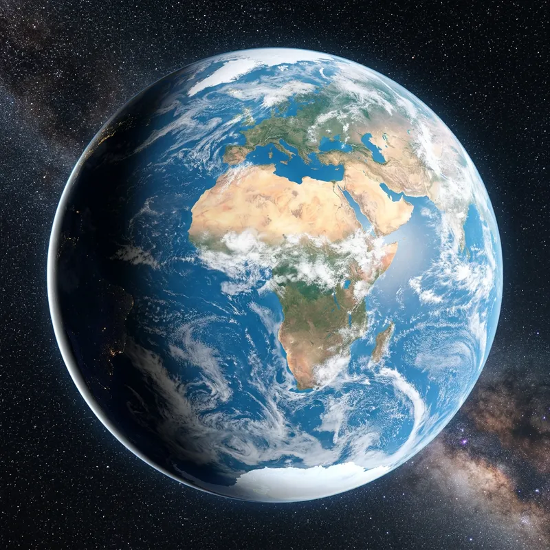
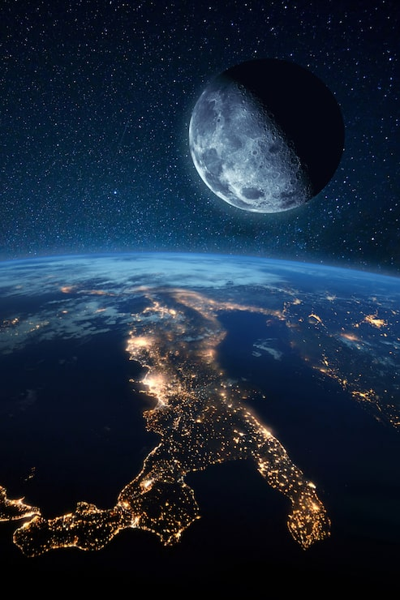

பூமியின் அமைப்பு
பூமியின் உள் அடுக்குகள் மற்றும் அதன் கட்டமைப்பைப் பற்றி அறிந்துகொள்வோம்.
பூமி என்பது நாம் வாழும் ஒரு கிரகம் மட்டுமல்ல. அதன் ஆழத்தில் இருக்கும் அடுக்குகள் முதல், அதன் மேற்பரப்பில் வாழும் உயிரினங்கள் வரை எண்ணற்ற அறிவியல் மர்மங்களை கொண்ட ஒரு அற்புதமான உலகமாகும்.
பூமியின் அமைப்பு, இயற்கை செயல்முறைகள், காலநிலை, கடல்கள், எரிமலைகள், உயிரினங்கள் மற்றும் பூமியின் எதிர்காலம் போன்றவற்றை அறிவியல் மூலம் அறிந்துகொள்ளலாம்.
ஒரு உயிருள்ள கிரகத்தின் அறிவியல் பயணம்
பூமியைப் புரிந்துகொள்ள வேண்டிய சில முக்கியமான அறிவியல் பகுதிகள்.
பூமியின் உள் அடுக்குகள் மற்றும் அதன் கட்டமைப்பைப் பற்றி அறிந்துகொள்வோம்.
எரிமலைகள், நிலநடுக்கங்கள் மற்றும் பூமியில் நடைபெறும் இயற்கை மாற்றங்கள்.
பூமியின் நீர் வளங்கள், கடல்கள் மற்றும் நீர்ச் சுழற்சியைப் பற்றி அறியலாம்.
பூமியில் உள்ள உயிரினங்கள் மற்றும் அவற்றைச் சுற்றியுள்ள சூழலைப் புரிந்துகொள்வோம்.
வானிலை, காலநிலை மற்றும் பூமியின் வளிமண்டல மாற்றங்களை அறிந்துகொள்வோம்.
மனித செயல்பாடுகள் மற்றும் பூமியின் எதிர்காலத்தை அறிவியல் பார்வையில் பார்ப்போம்.
பூமி தொடர்பான பல்வேறு அறிவியல் தலைப்புகளை ஒரே இடத்தில் பார்க்க, நமது Earth Dashboard-க்கு செல்லுங்கள்.
Earth Dashboard →விண்வெளியில் இருந்து காணப்படும் பூமியின் அழகையும், இரவு நேர பூமியையும் அறிந்துகொள்வோம்.

🌌 EARTH FROM SPACEவிண்வெளியில் இருந்து பார்க்கும்போது பூமி ஒரு அழகான நீல நிற கிரகமாகத் தோன்றுகிறது.

🌃 EARTH AT NIGHTஇரவில் செயற்கைக்கோள்களில் இருந்து பார்க்கும்போது நகரங்களின் விளக்குகள் பூமியின் மனித செயல்பாடுகளை வெளிப்படுத்துகின்றன.
 🌍 OUR HOME
🌍 OUR HOME
உயிர்கள் வாழும் நமது தனித்துவமான கிரகத்தை அறிவியல் பார்வையில் ஆராய்வோம்.
பூமியின் மேற்பரப்பு, வளிமண்டலம், கடல்கள் மற்றும் உயிரியல் அமைப்புகள் அனைத்தும் ஒன்றோடொன்று தொடர்புடையவை. இந்த மாற்றங்களைப் புரிந்துகொள்வதே Earth Science-ன் முக்கிய நோக்கங்களில் ஒன்றாகும்.
Crust முதல் Core வரை பூமியின் உள் அமைப்பை அறிந்துகொள்ளலாம்.
எரிமலைகள், நிலநடுக்கங்கள் மற்றும் Plate Tectonics போன்றவற்றை அறியலாம்.
வானிலை, காலநிலை மற்றும் வளிமண்டலத்தின் செயல்பாடுகளைப் புரிந்துகொள்ளலாம்.
பூமியில் வாழும் உயிரினங்களும் அவற்றின் சூழலும் எவ்வாறு தொடர்புபடுகின்றன என்பதை அறியலாம்.
இப்போது Earth Dashboard-க்கு சென்று பூமி தொடர்பான பல்வேறு அறிவியல் தலைப்புகளைத் தேர்ந்தெடுத்து கற்றுக்கொள்ளுங்கள்.
🌍 Earth Dashboard-க்கு செல்க →